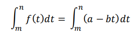

Ingresa los datos
Una vez que hayas ingresado los datos, nuestra herramienta utilizará un modelo de ventas que asume que la tasa de ventas disminuye linealmente con el tiempo después del lanzamiento oficial del producto.
Este modelo se basa en la ecuación que observas en el recuadro. Por favor, ten en cuenta que este modelo asume que las ventas fluctúan con el tiempo y pueden verse afectadas por factores como la disminución del interés o cambios en el mercado.
Gracias por proporcionar toda la información necesaria. Aquí están los resultados de la predicción de ventas para el período de tiempo que especificaste:
Unidades Vendidas
Unidades de tasa de disminución por día
Días para calcular
Unidades se venderan, aproximadamente
Por favor, ten en cuenta que estos resultados son estimaciones basadas en el modelo de disminución lineal de ventas y los datos que proporcionaste. Las ventas reales pueden variar debido a una serie de factores, incluyendo cambios en el mercado y el interés del consumidor.
Esta es la ecuacion en la que nuestro algoritmo se basa para realizar los calculos:
